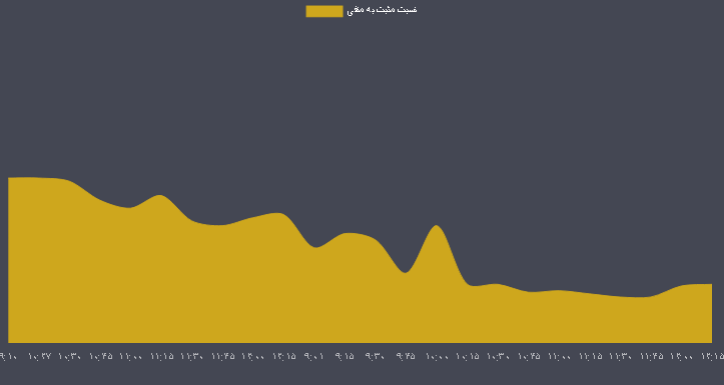

|
میانگین قدرت خریدار |
 |
در حال حاضر ساعات بررسی معاملات به پایان رسیده نسبت نمادهای مثبت به منفی فعلا عدد 0.63 می باشد که بیانگر قویتر بودن عرضه در بازار است. میانگین 10 روزه عدد 1.03 می باشد که گویا امروز با توجه به عدد فعلی 0.63 و کوچکتر بودن این عدد نسبت به میانگین 10 روزه بازار با افزایش عرضه ها طی روند 10 روزه خود مواجه است. |
||
|
تعداد سهام مثبت و منفی |
||||
|
نسبت ارزش صفوف |
نماد برجسته از نظر شاخص |
|||
|
نسبت مثبت به منفی |
نسبت تعداد صفوف |
تعداد صفوف |
تعداد سهم یا قدرت خرید بالا |
تعداد سهم یا حجم بالا |